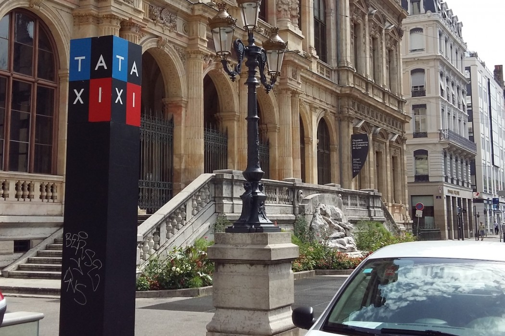

In lyon you can find taxi stand sign which does at least one part of its job very well. After all, we want our taxi stands to be visible, distinctive and memorable. And trust us; you will never forget the tataxixis in Lylyonon.
 Lyon, France.Previous Essay
Next Essay